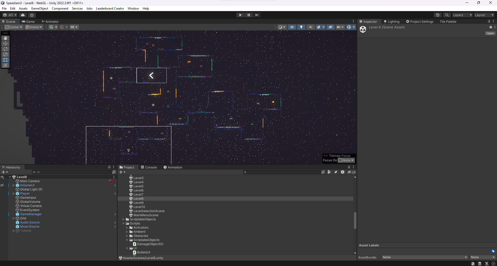
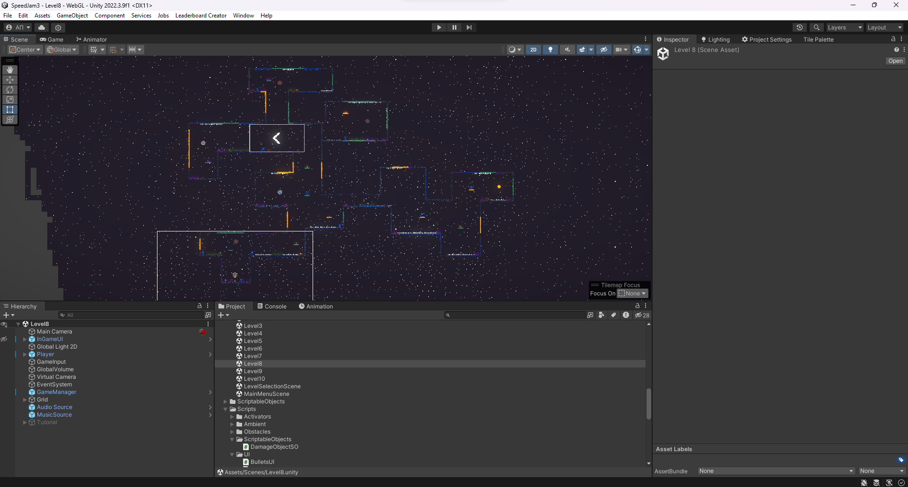

Development
Embarking on the development journey of "PussyStrike," a 2D pixel game set in the vast expanse of space, was an exhilarating venture for our three-member team. Led by Anton Panurin as the main developer, Roman Olekh as the 2D artist, and Oleg Zaplatinskiy overseeing the website development, our collaborative effort aimed to bring the adventures of Kitty the space cat to life.
The first challenge we encountered was mastering the intricacies of pixel graphics. Crafting a visually appealing and cohesive pixel art style demanded meticulous attention to detail. Roman Olekh, our talented 2D artist, navigated through the nuances of pixel artistry, ensuring that each pixel contributed harmoniously to the overall aesthetics of the game. From designing Kitty's animated movements to creating the celestial backdrop, every pixel was carefully placed to evoke a nostalgic yet vibrant atmosphere.
On the coding front, Anton Panurin faced the formidable task of bug hunting. Unity, our chosen game development platform, presented its own set of challenges. Tracking down and eliminating bugs in the code became a daily ritual. Anton's perseverance and problem-solving skills were instrumental in achieving a smooth and bug-free gaming experience. Whether it was refining the controls for Kitty's space maneuvers or ensuring seamless transitions between game scenes, every line of code played a crucial role in the game's functionality.
One of the standout features of "PussyStrike" is the intuitive mouse-controlled aiming system. Anton skillfully implemented this mechanic, allowing players to guide Kitty through space with precision. The challenge here was striking the right balance between responsiveness and ease of use, creating an immersive gameplay experience for players of all skill levels.
A particularly thrilling aspect of our development journey was the integration of hazardous elements into the game. Spikes, strategically placed throughout the space environment, posed a deadly threat to our feline protagonist. Anton's coding prowess came to the forefront as he programmed the intricate mechanics governing Kitty's interactions with the lethal spikes, adding an element of danger that heightened the game's excitement.
In addition to the in-game challenges, Oleg Zaplatinskiy worked diligently on the development of the game's website. Creating an online presence for "PussyStrike" involved implementing features such as an online leaderboard. Oleg seamlessly integrated these components, allowing players to compete globally and see how their space-cat piloting skills stacked up against others.
Collaboration was key throughout our journey, as each team member brought their unique expertise to the table. Anton's coding finesse, Roman's artistic flair, and Oleg's web development wizardry combined to create a well-rounded gaming experience.
"PussyStrike" stands as a testament to our collective dedication and the triumphs we achieved in the face of challenges. As the game takes flight into the gaming cosmos, we look back on our journey with pride, knowing that Kitty's space adventures will captivate players around the world.
 
